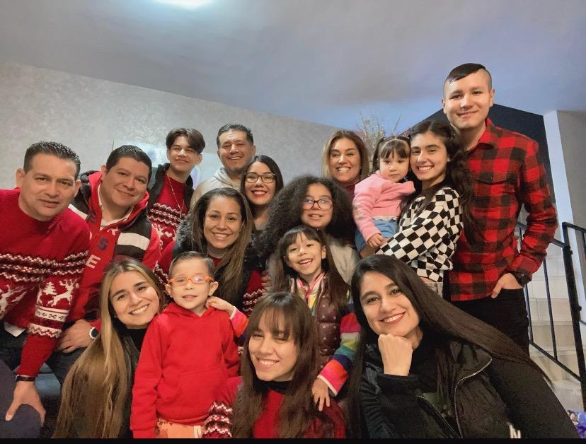

Mi familia es una parte fundamental en mi vida y tiene un significado muy especial para mi, es el núcleo de mi apoyo emocional, donde encuentro amor, comprensión y compañía. Me brinda un sentido de pertenencia y me enseña valores importantes como el respeto, la honestidad y la solidaridad. Son las personas con las que comparto momentos felices, tristezas y experiencias inolvidables, además, me han visto crecer y me conoce de una manera única. Me apoyan en mis metas y sueños, y me ayudan a superar los obstáculos que puedo encontrar en el camino, yo valoro mucho el tiempo que paso con mi familia y disfruto de su compañía y me siento feliz cuando estoy junto a ellos. La conexión y el apoyo que encuentro en mi familia son fundamentales para mi, ya que brindan amor, comprensión y momentos especiales que atesoro.
Mis padres son figuras fundamentales en mi vida, son las personas que me dieron la vida, me criaron, me cuidaron y me han apoyado en cada etapa de mi desarrollo. Me brindan amor incondicional, guía, protección y educación. Son quienes me han enseñado valores, principios y han sido ejemplos a seguir. Además, mis padres son quienes me conocen mejor y están ahí para apoyarme en mis logros y ayudarme a superar los desafíos que enfrento. Su presencia y apoyo son fundamentales y el vínculo que tengo con ellos es único y especial.
Mis tíos también tienen un papel importante en mi vida, son los hermanos de mis padres y, a menudo, desempeñan un papel de apoyo y guía en mi crecimiento. Pueden ser como segundos padres, brindándome consejos y experiencias de vida. Pueden ser una fuente adicional de apoyo emocional y pueden estar ahí para mi en momentos en los que necesito orientación o un hombro en el que apoyarme. Mis tíos también pueden enriquecer mi vida con sus propias perspectivas, conocimientos y experiencias únicas.
Mis primos son mis compañeros de juego y en muchos casos, hermanos adoptivos con las que comparto muchos recuerdos de la infancia y creamos lazos especiales. Pueden ser como hermanos y amigos cercanos con quienes comparto risas, aventuras y experiencias. Son personas con las que puedo contar y que están para apoyarme en diferentes etapas de mi vida. Los primos también pueden ser una fuente de diversión, compañía y apoyo emocional a lo largo de mi vida.
La familia es un pilar fundamental en mi vida, brindándome amor incondicional, apoyo emocional y un sentido de identidad. Son las personas que siempre estarán a mi lado, pase lo que pase, y su importancia es invaluable.
|  |